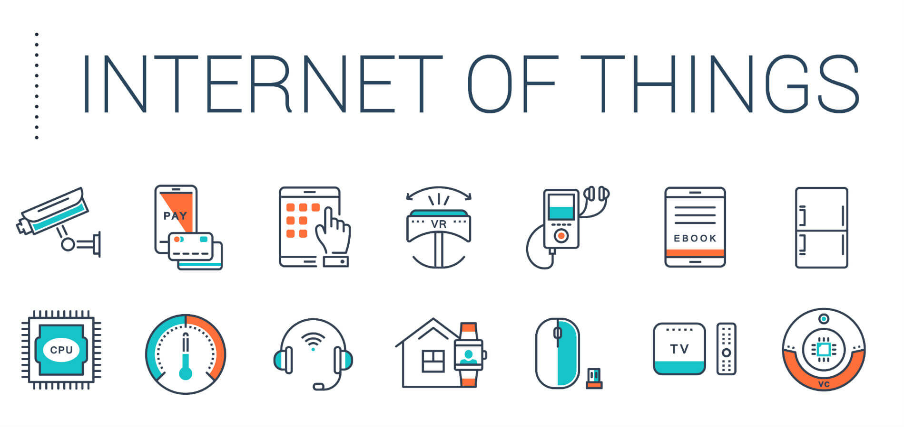
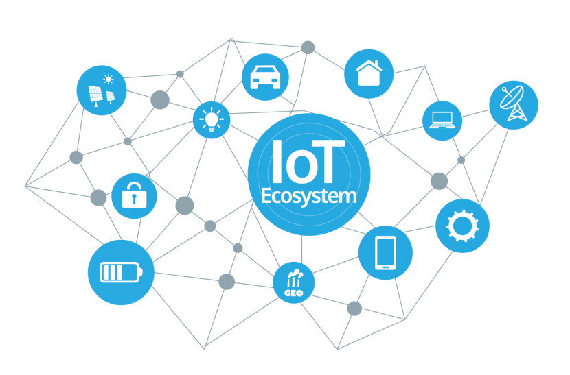
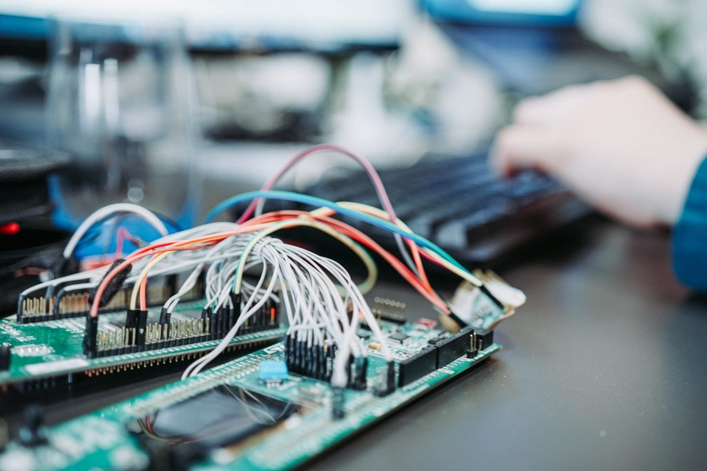

IoT se refiere a la agrupación e interconexión de dispositivos y objetos a través de una red (bien sea privada o Internet, la red de redes), dónde todos ellos podrían ser visibles e interaccionar.
Mediante el IoT, las empresas pueden obtener métricas de profundidad, a través de la interacción que hace el usuario con el dispositivo.
Gracias a los datos que se recopilan se logra entender mejor a los clientes. Además pueden predecir posibles comportamientos de los usuarios y anticiparse a ellos, ya sea mejorando sus opciones o diseñando nuevas funcionalidades.
Gracias a los datos obtenidos a través del IoT, las empresas pueden anticiparse a las necesidades de los usuarios y, así, automatizar muchos procesos.
